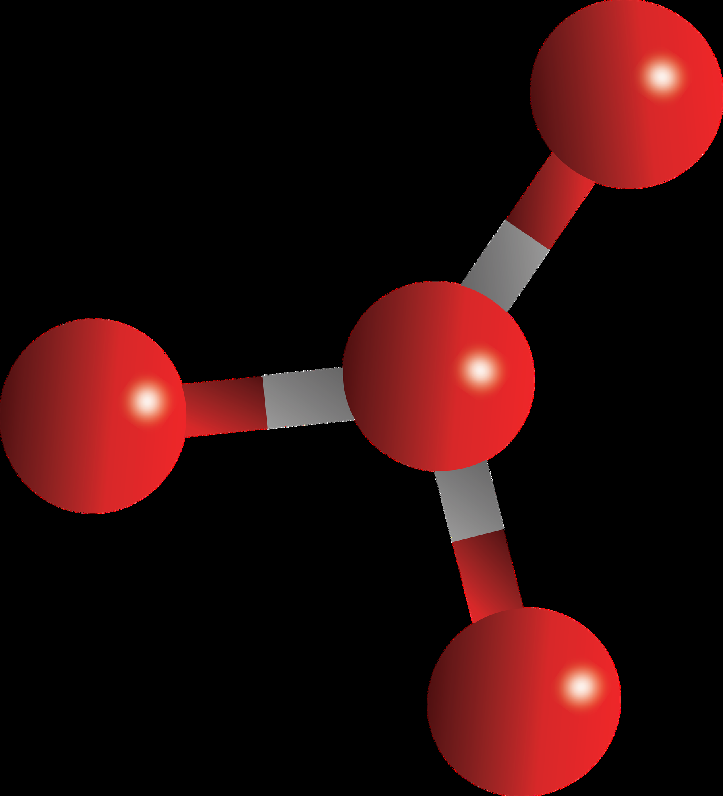
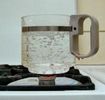
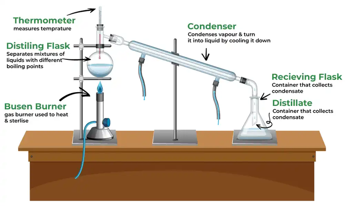
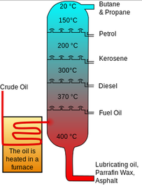
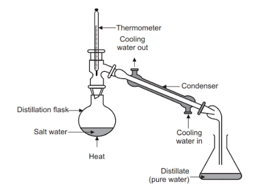
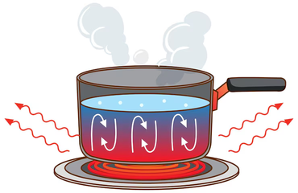
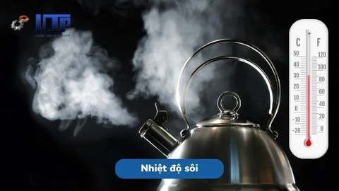
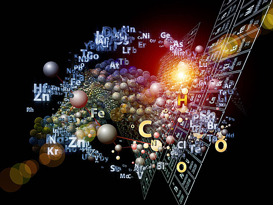

Boiling point
| Vietnamese | ( ) Nhiệt độ sôi |
|---|---|
| English | Boiling point |
| Pronunciation | /ˈbɔɪ.lɪŋ ˌpɔɪnt/ |
| Word type | noun (as labelled in the PDFs) |
Topic 1 — Meaning (Vietnamese)
Nhiệt độ sôi hay điểm sôi của một chất lỏng là nhiệt độ mà áp suất hơi của chất lỏng bằng với áp suất chung quanh chất lỏng. Khi đạt tới ngưỡng đó thì chất chuyển trạng thái từ lỏng sang khí. the liquid and the liquid changes into a vapor
Meaning (English)
The boiling point of a substance is the temperature at which the vapor pressure of a liquid equals the pressure surrounding (Nhiệt độ sôi hay điểm sôi của một chất lỏng là nhiệt độ mà áp suất hơi của chất lỏng bằng với áp suất chung quanh chất lỏng. Khi đạt tới ngưỡng đó thì chất chuyển trạng thái từ lỏng sang khí. the liquid and the liquid changes into a vapor).
Example
The boiling point of a liquid varies depending upon the surrounding environmental pressure. (Nhiệt độ sôi của một chất lỏng thay đổi tùy thuộc vào áp suất môi trường xung quanh). II.Classification
Topic 2 — Meaning (Vietnamese)
Not separately specified in the PDF transcription.
Meaning (English)
Nhiệt độ tại Nhiệt độ sôi đó chất lỏng sôi. / The temperature at which a liquid boils.
Example
The boiling point determines whether distillation is suitable. (n phr) /ˈsteɪʃənəri feɪz/
Topic 4 — Meaning (Vietnamese)
Nhiệt độ sôi hay điểm sôi của một chất lỏng là nhiệt độ mà áp suất hơi của chất lỏng bằng với áp suất chung quanh chất lỏng. Khi đạt tới ngưỡng đó thì chất chuyển trạng thái từ lỏng sang khí. the liquid and the liquid changes into a vapor
Meaning (English)
The boiling point of a substance is the temperature at which the vapor pressure of a liquid equals the pressure surrounding (Nhiệt độ sôi hay điểm sôi của một chất lỏng là nhiệt độ mà áp suất hơi của chất lỏng bằng với áp suất chung quanh chất lỏng. Khi đạt tới ngưỡng đó thì chất chuyển trạng thái từ lỏng sang khí. the liquid and the liquid changes into a vapor).
Example
The boiling point of a liquid varies depending upon the surrounding environmental pressure (Nhiệt độ sôi của một chất lỏng thay đổi tùy thuộc vào áp suất môi trường xung quanh).
Images from the PDFs












